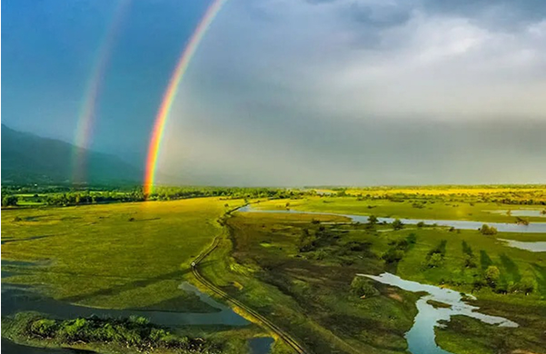

본문콘텐츠영역
Culture add_a_photo
-
Museums
Discover the Treasures of GreeceGreek culture is one of the most emblematic in the world. Greece is also known as the cradle of Western civilization, where ancient history, art, and culture converge to create an unparalleled tapestry of human achievement. The rich heritage dating back thousands of years, beckons you to embark on a captivating journey through its myriad museums. Whether you're an archaeology buff, an art lover, or simply a curious soul, Greece's museums promise a journey through time, culture, and innovation.
- V Museum Corfu
Archaeological Sites & Monuments
Sparse all around the Greek territory there is a plethora over 100 of imposing archaeological sites, some of which proudly populate the UNESCO World Heritage Sites list. Let’s take a cultural tour in the cradle of the western civilisation and discover significant sites and monuments; sights to add to your "must-see" list!
- The Bridges of Grevena
-
 Dispilio of Kastoria
Dispilio of Kastoria - Akrotiri of Thira
Venues
Welcome to a world where the arts come alive, where the echoes of history harmonise with contemporary brilliance – the cultural heart of Greece. As you embark on a journey through our curated section of cultural venues, you'll find yourself surrounded by a symphony of experiences that celebrate the essence of creativity, heritage and science. Greek culture, leaving you with memories that resonate long after you've experienced the magic of these extraordinary venues.
- Planetarium
- Lipasmata Park
- National Observatory of Athens
Gastronomy grocery
-
Traditional Cuisine
Greek cuisine is more than just “moussaka”, “souvlaki” and the famous Greek Salad; it offers a variety of delicious and healthy dishes that can satisfy both vegetarians and meat lovers.
-
Traditional Products
Traditional Greek cuisine is based on quality natural products such as olives, extra virgin olive oil, dairy products, honey, fish, nuts and many more.
-
Greek Wines
The Greek vineyard is rich with a multitude of varieties and limitless choices. Savour all Greek wines from the country's vineyards and enjoy a unique spectrum of flavours and aromas.
-
Greek Beverages
Distillation is an art form that Greeks, are and have been, fond of for ages. Ouzo, tsipouro, raki, these clear, highly scented strong drinks are the hallmark of Greek celebrations on any occasion.

Nature psychiatry
Mountains
Greece is primarily a mountainous country with more than 300 larger or smaller mountains.
- Mount Pelion
- Tzoumerka Μountain chain ads_click
- Mount Parnitha ads_click
Foresst
Forest areas have expanded considerably since the 1990's in Greece.
- Foloi oak forest
- Mt. Ainos National Park ads_click
- Pindos National Park ads_click
Rivers
Rivers around Greece offer open-handedly amazing ecosystems and breathtaking activities for you to enjoy
- Pineios river
- Escape at the Nestos Straits ads_click
- Acherodas River ads_click
Lakes
There is something mesmerizing about sitting and looking at water
- Escape to Lake Kerkini
 Lake Vegoritida
ads_click
Lake Vegoritida
ads_click- Lake Doxa ads_click
Caves
Journey into one of Greece’s awe-inspiring caves.
- Idaion Antro
- Diktaean Caveads_click
- Aggitis Caveads_click
Video auto_read_play
You can enjoy beautiful or lively videos of your trip to Greece.


Gallery add_photo_alternate
Your heart brightens up with the beautiful scenery of Greece.